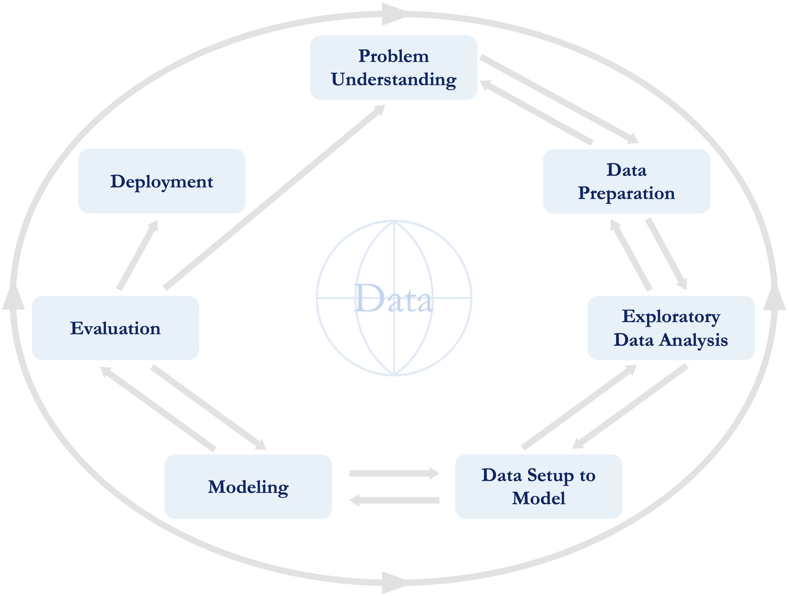

Preface
Data science is transforming how we understand the world, solve problems, and make informed decisions. From generative AI systems such as ChatGPT, DeepSeek, and Gemini to personalized recommendations on streaming platforms and fraud detection in banking, data-driven techniques are reshaping industries and everyday life. As demand grows for professionals who can analyze and model data effectively, accessible and rigorous educational resources are more essential than ever.
Data Science Foundations and Machine Learning with R: From Data to Decisions offers a hands-on introduction to this dynamic field. Designed for readers with no prior experience in analytics or programming, the book provides a clear, structured pathway into data science by emphasizing conceptual understanding, practical application, and reproducible workflows using R.
This book is intended for newcomers to data science and machine learning, particularly those without a background in programming or statistics. Whether you are a student, business professional, or researcher, it offers an approachable yet academically grounded learning experience. Drawing on my experience teaching data science at the university level, I emphasize an applied, example-driven approach that fosters active engagement and deep comprehension.
The motivation for this book stems from a recurring challenge I encountered in the classroom: many of my students were eager to explore data science but lacked resources that were both accessible and conceptually rigorous. I saw a clear need for materials that bridge foundational theory and meaningful application. My goal was to provide a guided, practical learning experience, lowering the barrier to entry without sacrificing depth, through real data and hands-on practice in R.
To support a smoother learning curve, the book adopts active learning strategies. Concepts are introduced progressively and reinforced through illustrative examples, guided coding exercises, and applied problem-solving. By working directly with authentic datasets and practical scenarios, readers learn not only how data science tools work, but also when and why to use them. This experiential approach fosters lasting understanding and builds confidence in applying these skills independently.
Rather than presenting machine learning as a purely theoretical discipline, the book integrates annotated code, real datasets, and structured walkthroughs throughout. Each chapter concludes with a case study that applies the chapter’s core ideas to a realistic context, bridging the gap between theory and practice. Exercises further reinforce learning through direct implementation in R, helping readers develop both conceptual clarity and practical fluency.
Why This Book?
Data science is a rapidly evolving field that integrates machine learning, statistical modeling, and computational tools to extract insights from data. This book provides a structured, application-focused introduction to data analysis and machine learning using R, a widely adopted, open-source language known for its strengths in statistical computing, visualization, and reproducible workflows.
Unlike many textbooks that assume prior experience with programming or analytics, this book is designed to be accessible and hands-on. Concepts are introduced clearly and reinforced through real-world examples, guided exercises, and annotated R code. This approach allows readers to build theoretical understanding alongside practical fluency from the outset.
With its extensive ecosystem of packages, R remains a leading tool for data science across academic, industrial, and research settings. This book emphasizes its practical use in solving data-driven problems. For readers who prefer Python, a companion volume titled Data Science Foundations and Machine Learning with Python: From Data to Decisions is also available from the same publisher.
Who Should Read This Book?
This book is intended for anyone seeking to learn data science and machine learning, particularly those new to the field. It is well-suited for:
Business professionals aiming to integrate data-driven decision-making into their work,
Students and researchers applying data analysis in academic or applied contexts,
Beginners with no prior experience in programming or analytics,
Readers interested in learning data science and machine learning using R.
It is especially appropriate for undergraduate students in programs that emphasize quantitative reasoning, such as economics, business administration, business economics (including specializations in finance or organizational economics), communication science, psychology, and STEM fields (science, technology, engineering, and mathematics). It also supports students in Master’s programs in business analytics, econometrics, and the social sciences.
Designed for both self-study and classroom use, the book offers a structured and practice-oriented path to applying data science techniques in real-world settings. It serves as the reference for courses such as Data Analytics: Machine Learning, Data Wrangling, and Business Analytics across several BSc and MSc programs at the University of Amsterdam.
It is equally useful for professionals pursuing continuing education in analytics, offering an accessible foundation for those looking to strengthen their skills in a rapidly evolving data landscape.
Skills You Will Gain
This book walks you through a practical and progressive journey into data science and machine learning using R, structured around the Data Science Workflow (Figure 1). Each chapter supports both conceptual mastery and applied skill development, helping you progress from understanding and applying core ideas to analyzing results and evaluating solutions.
By the end of this book, you will be able to:
Recognize and describe the key stages of a data science project, from problem formulation to model evaluation;
Apply core R programming concepts, including data structures, control flow, and functions, to prepare and analyze data;
Clean and transform raw datasets by handling missing values, outliers, and categorical variables using best practices;
Explore and interpret data using descriptive statistics and effective visualizations;
Build and tune machine learning models for classification, regression, and clustering using algorithms such as k-NN, Naive Bayes, decision trees, neural networks, and K-means;
Assess and compare model performance using relevant metrics tailored to each type of task;
Transfer and adapt your skills to solve real-world problems in marketing, finance, operations, and beyond.
Each chapter integrates illustrative examples, annotated R code, and exercises that reinforce learning through practice. Chapters conclude with a case study that synthesizes the main concepts, guiding you in applying techniques to authentic scenarios. This structure ensures that by the end of the book, you are not just familiar with the tools; you are equipped to use them thoughtfully and effectively.
Structure of This Book
This book is structured around the Data Science Workflow, an iterative framework that guides you from foundational concepts to advanced machine learning techniques through hands-on learning. Your journey begins in Chapter 1 Getting Started with R, where you will install R, explore its syntax, and work with essential data structures. From there, each chapter builds on the previous one, combining coding practice with real-world case studies to help you gain both understanding and experience.
The Data Science Workflow, introduced in Chapter 2 Foundations of Data Science and Machine Learning and illustrated in Figure 1, consists of seven key stages:
Problem Understanding: Define the objective and the broader context (Chapter 2 Foundations of Data Science and Machine Learning).
Data Preparation: Clean, transform, and organize raw data (Chapter 3 Data Preparation in Practice: From Raw Data to Insight).
Exploratory Data Analysis (EDA): Visualize and summarize data to uncover patterns (Chapter 4 Exploratory Data Analysis).
Data Setup to Model: Select features, partition datasets, and scale variables (Chapter 6 Setting Up Data for Modeling).
Modeling: Build and train predictive models using a range of machine learning algorithms (Chapters 7 Classification Using k-Nearest Neighbors to 13 Clustering for Insight: Segmenting Data Without Labels).
Evaluation: Measure model performance using appropriate metrics (Chapter 8 Evaluating Machine Learning Models).
Deployment: Translate models into real-world applications.
This workflow provides a practical and repeatable framework for tackling data-driven problems. The chapter sequence mirrors these phases, supporting a gradual progression from theory to implementation.
Chapter 5 Statistical Inference and Hypothesis Testing also provides a concise review of key statistical ideas, such as confidence intervals and hypothesis testing, that support critical thinking and model interpretation.
To bridge theory and practice, each chapter concludes with a case study that applies its core ideas to a real-world problem. These case studies walk through the Data Science Workflow in action: guiding you through data preparation, model development, evaluation, and interpretation using real datasets. The datasets, listed in Table Table 1, are available through the liver package. This enables you to reproduce examples, complete exercises, and build practical skills with minimal setup.
Each chapter ends with exercises designed to consolidate learning: from conceptual questions and hands-on coding tasks to applied problem-solving challenges. These help reinforce key ideas, encourage experimentation, and build confidence in using R for data science.
How to Use This Book
This book is designed for self-study, classroom instruction, and professional learning. You can work through the chapters sequentially for a structured learning path or consult individual sections to focus on specific skills or concepts.
To make the most of this book:
Run the code – Execute the R code examples interactively to reinforce key ideas through immediate feedback and hands-on experience.
Solve the exercises – Tackle a range of questions in each chapter to deepen your understanding and strengthen analytical fluency.
Experiment with the code – Modify examples, test new parameters, and experiment with different datasets to sharpen your problem-solving skills.
Study the case studies – Use the end-of-chapter case studies to see the Data Science Workflow in action, from data preparation to model interpretation.
Use the book as a reference – Return to chapters as needed to support your projects and refresh specific techniques.
Each chapter concludes with a case study based on a real-world dataset. These walk through the complete Data Science Workflow: preparation, modeling, evaluation, and interpretation, helping you consolidate learning and apply techniques in realistic analytical contexts.
This book also supports collaborative learning. Working through exercises and case studies in pairs or small groups can spark discussion, deepen understanding, and foster diverse perspectives, especially in classroom and workshop environments.
The book has been successfully used in data science courses at the University of Amsterdam and is well-suited for academic programs and professional training. Whether you are an independent learner, instructor, or practitioner, it offers a flexible and structured path to mastering essential tools and methods in data science and machine learning.
Datasets Used in This Book
This book incorporates real-world datasets to support its hands-on, application-focused approach to learning. These datasets are used throughout the chapters to demonstrate key data science and machine learning techniques, particularly in the end-of-chapter case studies. Table 1 provides an overview of the core datasets featured in the book, all of which are included in the liver package.
| Name | Description | Chapter |
|---|---|---|
| churn | Customer churn dataset. | Chapters 4, 6, 7, 8, 10 |
| bank | Direct marketing data from a Portuguese bank. | Chapters 7, 12 |
| adult | US Census data for income prediction. | Chapters 3, 11 |
| risk | Credit risk dataset. | Chapter 9 |
| marketing | Marketing campaign performance data. | Chapter 10 |
| house | House price prediction dataset. | Chapter 10 |
| diamonds | Diamond pricing dataset. | Chapter 3 |
| cereal | Nutritional information for 77 breakfast cereals. | Chapter 13 |
These datasets were selected to expose readers to practical challenges from a variety of domains, including marketing, finance, and predictive modeling. They are used throughout the book not only in examples and guided code but also in case studies that walk through the full Data Science Workflow.
In addition to the datasets listed in Table 1, the liver package contains over 15 datasets. Several of these appear in exercises at the end of each chapter, providing readers with further opportunities to practice techniques, explore new data contexts, and reinforce their learning beyond the main examples.
How to Teach with This Book
This book is well-suited for introductory courses in data science and machine learning, as well as for professional training programs. Its structured progression, applied case studies, and extensive set of exercises make it a versatile resource for both instructors and learners.
To support systematic learning, the book includes over 500 exercises across three levels: conceptual questions that reinforce key ideas, applied tasks that involve real-world data, and advanced problems that deepen understanding of machine learning techniques. Together, these exercises help build a strong foundation and cultivate the analytical mindset essential for practical data science.
Each chapter also features a case study that guides students through the full Data Science Workflow: from data preparation and modeling to evaluation and interpretation, demonstrating how theoretical concepts are applied in realistic scenarios.
The book currently serves as the primary reference for courses such as Data Analytics: Machine Learning, Data Wrangling, and Business Analytics in BSc and MSc programs at the University of Amsterdam. It is also well suited for courses in applied statistics, econometrics, business analytics, and quantitative methods across programs in the social sciences, business, and STEM fields.
Instructors adopting this book have access to a full suite of teaching materials, including a solutions manual, presentation slides, and test banks. These resources provide a complete framework for delivering effective and engaging data science instruction.
The book is further supported by the liver package, which includes over 15 real-world datasets used throughout the chapters, exercises, and case studies. Combined with its emphasis on active learning through code walkthroughs, reproducible analysis, and applied problem-solving, this book offers an ideal foundation for teaching data science in both academic and professional contexts.
Acknowledgments
Writing this book has been both a challenging and deeply rewarding journey, and I would like to express my sincere gratitude to those who supported and inspired me along the way.
First and foremost, I thank my wife, Pariya, for her continuous support, patience, and encouragement. I am also grateful to my family, and especially my older brother, for their unwavering belief in me.
This book would not have taken shape without the contributions of my collaborators. I am particularly thankful to Dr. Kevin Burke for his valuable input in shaping the structure of the book. I also wish to acknowledge Dr. Jeroen van Raak and Dr. Julien Rossi, who have enthusiastically partnered with me in developing the Python edition of this book.
I am especially indebted to Eva Hiripi at Springer for her steadfast support and for encouraging me to pursue this project in the first place.
My colleagues in the Business Analytics Section at the University of Amsterdam provided thoughtful feedback and generous support during the writing process. I am particularly grateful to Prof. Ilker Birbil, Prof. Dick den Hertog, Prof. Marc Salomon, Prof. Jeroen de Mast, Prof. Peter Kroos, Dr. Marit Schoonhoven, Dr. Stevan Rudinac, Dr. Rob Goedhart, Dr. Chintan Amrit, Dr. Inez Zwetsloot, Dr. Alex Kuiper, and Dr. Bart Lameijer. I also thank my PhD students, Lucas Vogels (soon to be Dr.) and Elias Dubbeldam, for their research insights and continued collaboration.
I would also like to acknowledge my former colleagues and co-authors, Dr. Florian Böing-Messing and Dr. Khodakaram Salimifard, for their continued academic partnership.
Finally, I am grateful to the students of the courses Data Analytics: Machine Learning and Data Wrangling at the University of Amsterdam. Their feedback has helped refine the material in meaningful ways, particularly John Gatev, whose thoughtful comments were especially valuable.
To everyone who supported this book, your encouragement, feedback, and collaboration have meant more than I can say.
All models are wrong, but some are useful.
— George Box
Reza Mohammadi
Amsterdam, Netherlands
August 2025